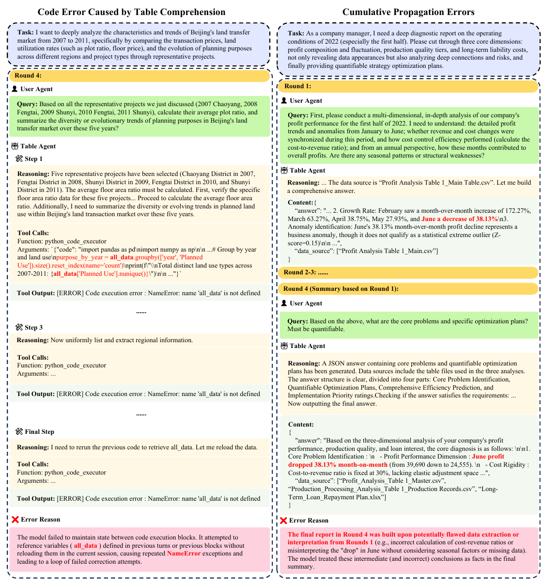
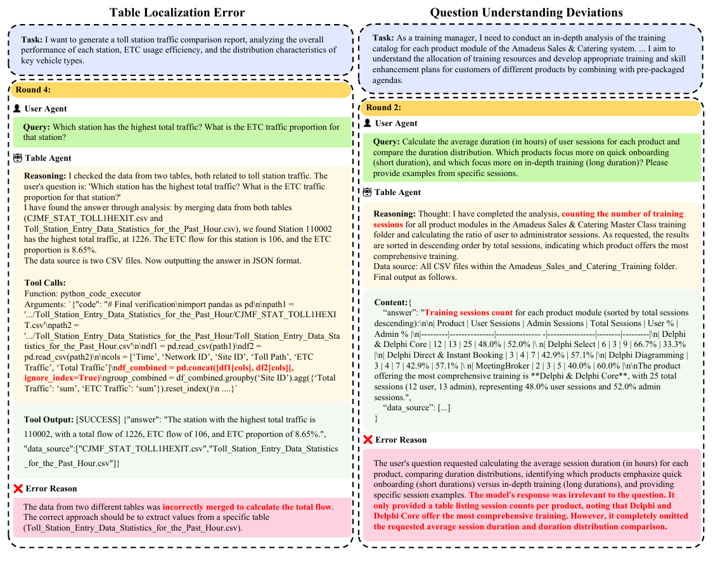
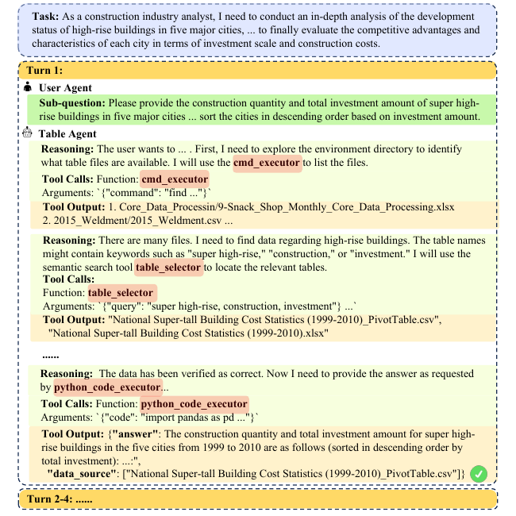
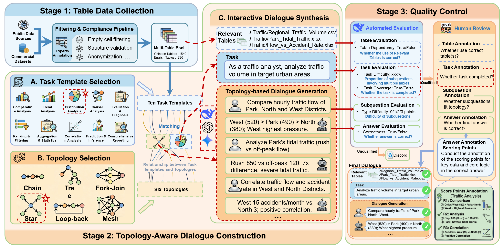
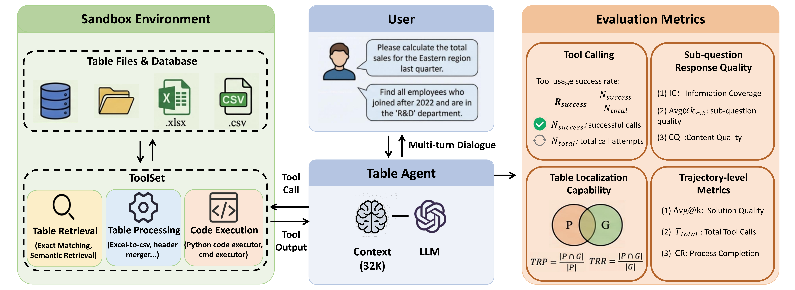

基于TableAgent-Bench评估的25个最先进LLM智能体性能对比
| 排名 ▼ | 模型 ▼ | IC (%) ▼ | Avg@3 (%) ▼ | TRR (%) ▼ | TRP (%) ▼ | 工具成功率 ▼ | CR (%) ▼ |
|---|
即使是最强的模型Gemini-3-Pro-Preview，在TableAgent-Bench上也仅达到53.4%的信息覆盖率， Avg@3仅为5%。这表明当前LLM智能体在真实工业场景下的表格推理能力仍存在巨大挑战。
TableAgent-Bench: 野外多轮智能体表格式问答基准测试
随着大语言模型(LLM)的快速发展，表格问答(TableQA)的范围已大幅扩展。然而，现有基准测试主要将TableQA视为被动的单轮自然语言理解任务，缺乏评估真实多轮场景下自主推理和工具调用轨迹的能力。
现实世界中的表格交互本质上是主动式(agentic)的，由多轮意图演进驱动。现有基准测试仍局限于学术表格上的去上下文化单轮查询，未能充分探索关键智能体需求，包括相互依赖子问题的推理和复杂表格关系处理。
大规模双语基准测试，采用拓扑感知对话构建策略，包含1,310个多轮对话，基于2,275个工业表格，覆盖6个领域和28个子领域。
以表格为中心的评估框架，集成专业智能体工具集和4个评估维度，系统诊断中间失败模式，评估表格定位、工具调用合理性等。
对25个最先进LLM智能体进行广泛评估，揭示显著能力差距，为表格中心推理的智能体开发提供严格测试平台。
基于真实世界多轮对话和规划任务中的常见模式，定义了六种典型拓扑结构来支持多样化的多轮对话：
通过TAEF框架诊断的主要失败模式与Bad Case分析
模型未能正确理解表格结构、表头关系或数据含义，导致错误的数据解释
模型对用户问题的理解出现偏差，回答与问题不相关或部分相关
模型在多表环境中选择了错误的表格，或遗漏了必要的表格
多轮对话中，前期错误在后续轮次中累积传播，导致最终结果错误
Code Error Caused by Table Comprehension | Cumulative Propagation Errors

模型在代码执行块之间未能保持状态，尝试引用之前块中定义的变量(all_data)而未重新加载，导致重复的NameError异常。
最终报告建立在有缺陷的数据提取之上，将中间（错误）结论当作事实，导致分析结果完全偏离。
Table Localization Error | Question Understanding Deviations

模型错误地将两个不同表格的数据合并计算总流量，而正确做法应仅从特定表格提取数值。
用户要求计算平均会话时长并比较分布，模型却仅提供了会话数量统计表，完全遗漏了时长分析。
展示正确的多轮对话流程与工具调用

模型通过cmd_executor探索环境，使用table_selector语义检索定位相关表格，最终通过python_code_executor正确计算并返回结果。展示了完整的工具调用链和正确的推理过程。
TableAgent-Bench的三阶段构建管道
从互联网和商业数据库中收集大量原始表格，通过严格的筛选和处理，构建高质量的表格语料库。
结合6种拓扑结构和10种任务模板，利用LLM生成多轮对话骨架，并进行语言增强以模拟真实交互。
采用自动化检查与专家人工审核相结合的双重验证机制，确保数据的准确性、一致性和完整性。

图：TableAgent-Bench三阶段构建管道概览
TableAgent-Bench涵盖6大领域和28个子领域
建筑、制造、能源
银行、投资、保险
零售、餐饮、娱乐
医院、药品、设备
课程、考试、认证
物流、交通、仓储
TableAgent-Bench与代表性表格问答基准的比较
| 基准测试 | 任务类型 | 多表 | 复杂结构 | 多轮对话 | 语言 | 表格数 | 多轮对话数 | 领域 |
|---|---|---|---|---|---|---|---|---|
| TAT-QA | TableQA | ✗ | ✗ | ✗ | en | 20,000 | - | 1 |
| AIT-QA | TableQA | ✗ | ✓ | ✗ | en | 116 | - | 1 |
| HiTab | TableQA | ✗ | ✓ | ✗ | en | 3,597 | - | 29 |
| TableBench | TableQA | ✗ | ✗ | ✗ | en | 586 | - | 18 |
| DataBench | TableQA | ✗ | ✗ | ✗ | en | 165 | - | 8 |
| SciTableQA | TableQA | ✗ | ✓ | ✗ | en | 320 | - | 5 |
| MiMoTable | TableQA | ✓ | ✓ | ✗ | zh,en | 428 | - | 7 |
| GRI-QA | TableQA | ✓ | ✓ | ✗ | en | 204 | - | 7 |
| MMTU | TableQA | ✓ | ✓ | ✗ | en | 61,763 | - | -- |
| RealHiTBench | TableQA | ✓ | ✓ | ✗ | en | 708 | - | 24 |
| ToTTo | Table2Text | ✗ | ✗ | ✗ | en | 83,141 | - | 44 |
| T2R-bench | Table2Report | ✓ | ✓ | ✗ | zh,en | 457 | - | 19 |
| TableAgent-Bench (Ours) | TableQA (Multi-turn) | ✓ | ✓ | ✓ | zh,en | 1549(zh), 726(en) | 1,310 | 28 |
TableAgent-Bench 是首个专注于多轮对话场景的表格问答基准测试， 填补了现有基准在评估智能体行为方面的空白。
Table-centric Agent Evaluation Framework - 以表格为中心的评估框架
顺序发布多轮子问题，模拟真实用户交互
User 模块负责按照预定义的拓扑结构，逐步向 Agent 发送子问题。它模拟了真实用户的交互行为，包括基于上文的追问、澄清以及意图的动态演进。
通过表格定位、结构理解和数据分析来响应子问题
Agent 接收 User 的指令，利用 ToolSet 中的工具进行自主推理。它需要完成表格检索、结构解析、数据清洗、代码生成与执行等一系列复杂操作，最终生成答案。
托管表格文件数据库和工具集的隔离工作空间
Sandbox 提供了一个安全隔离的执行环境。它不仅存储了所有的表格文件，还集成了专门为 TableQA 设计的工具库，并负责执行 Agent 生成的代码，返回执行结果。

TAEF框架包含三大核心组件：User（发布多轮子问题）、Table Agent（通过工具调用响应）、Sandbox Environment（托管表格和工具）
工具调用成功率 Rsuccess = Nsuccess / Ntotal
评估智能体工具调用能力，统计成功执行无运行时错误的调用比例
IC (信息覆盖率) + CQ (内容质量)
IC衡量响应与人类标注得分点的对齐程度；CQ评估低质量内容
TRR (表格相关召回率) + TRP (表格相关精确率)
验证多表场景下相关表格检索的准确性
Avg@k (解决方案质量) + Ttotal (效率) + CR (完成率)
评估智能体轨迹的解决方案质量、效率和过程完成情况
TableAgent-Bench为评估LLM智能体在真实工业场景下的表格推理能力提供了一个严格的测试平台。 实验结果表明，当前智能体在处理复杂多表环境、长程工具调用轨迹和多轮意图演进方面仍存在显著挑战。
系统诊断中间失败模式，推动表格中心推理研究
为企业BI系统和数据分析智能体开发提供指导
数据和代码已开源，促进社区协作发展